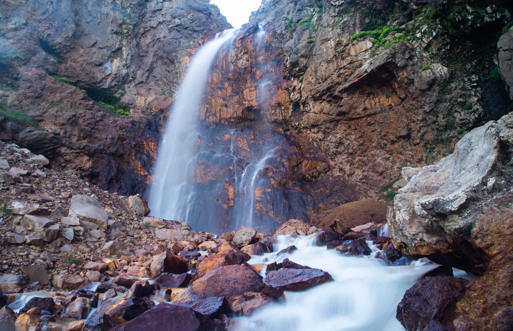
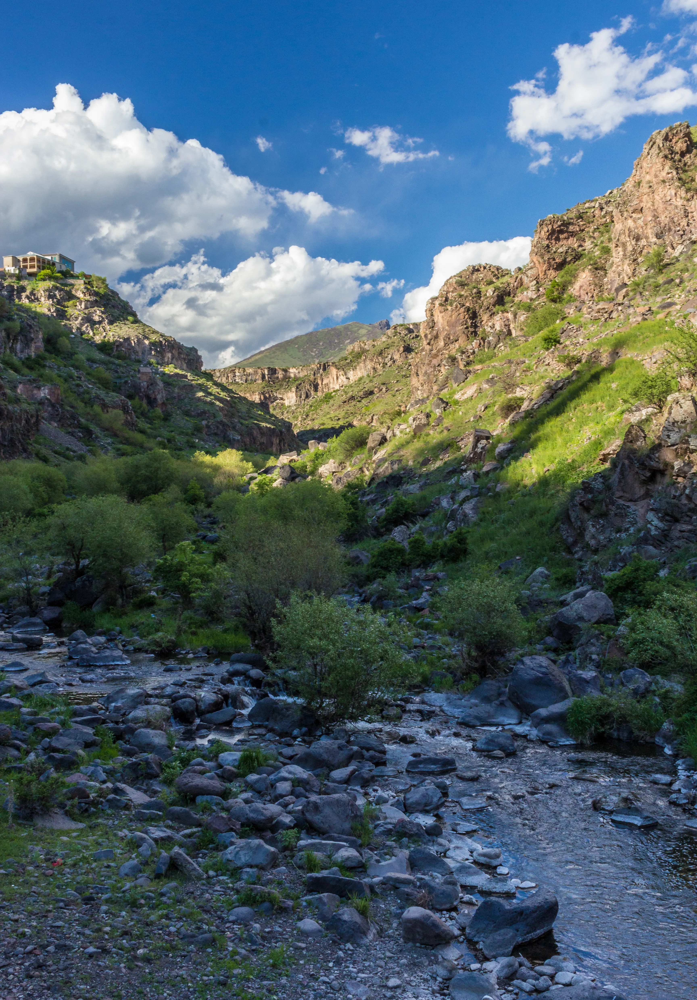
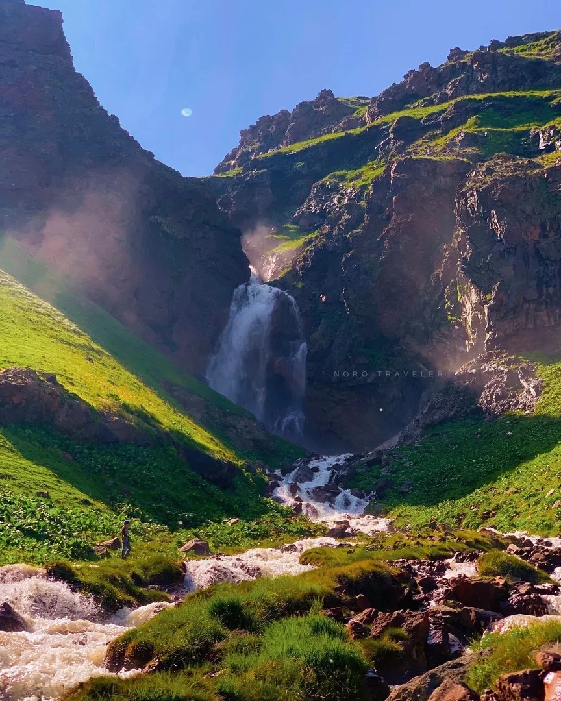
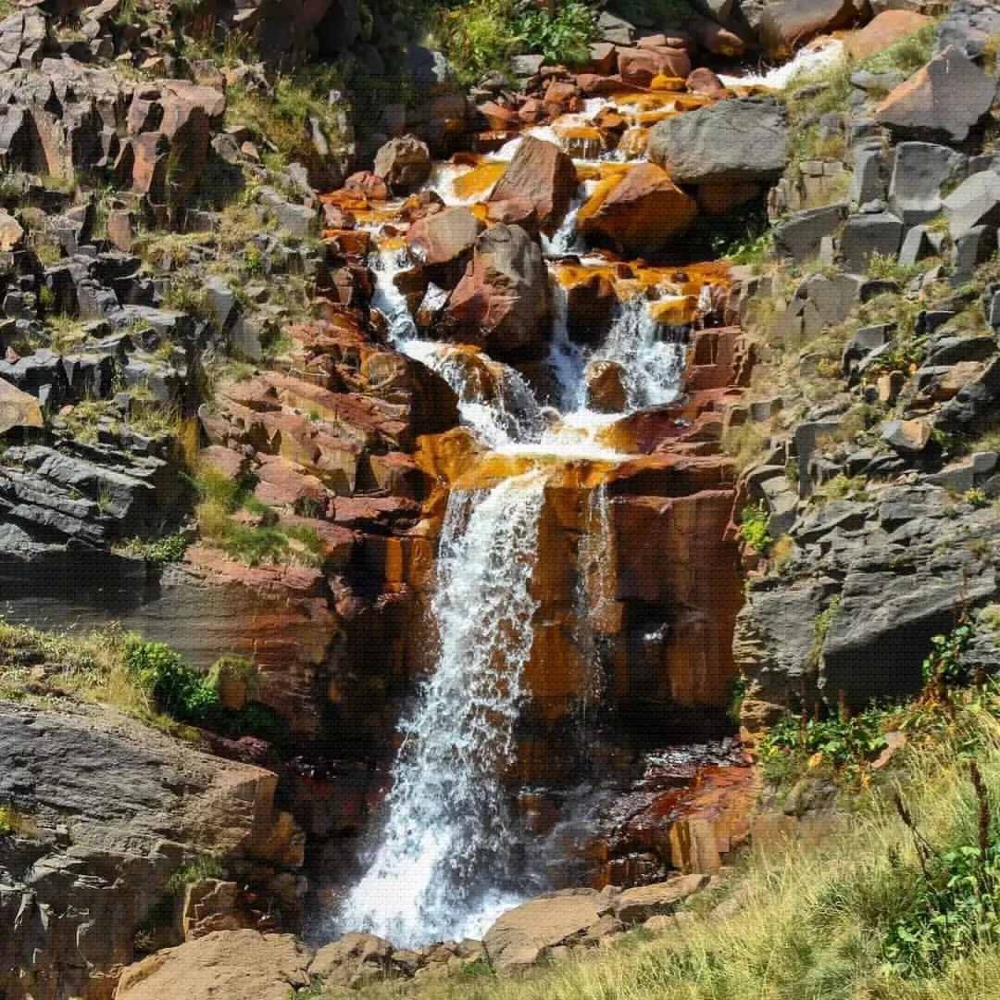
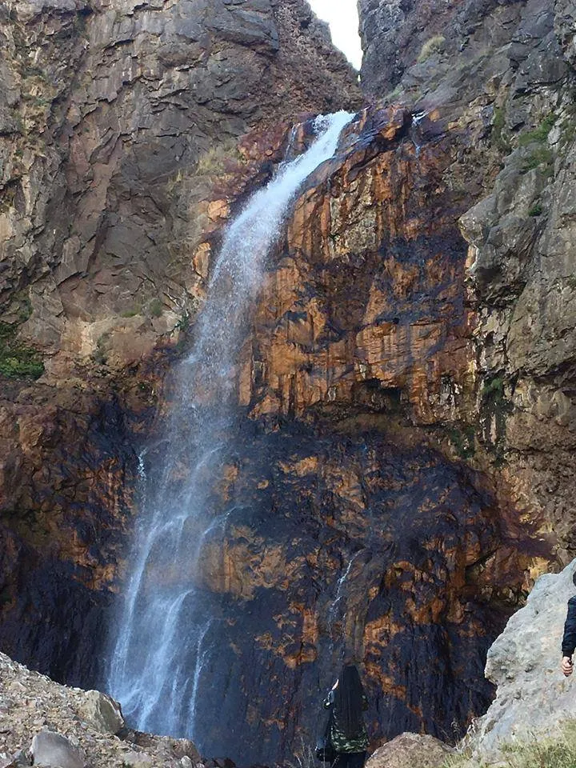
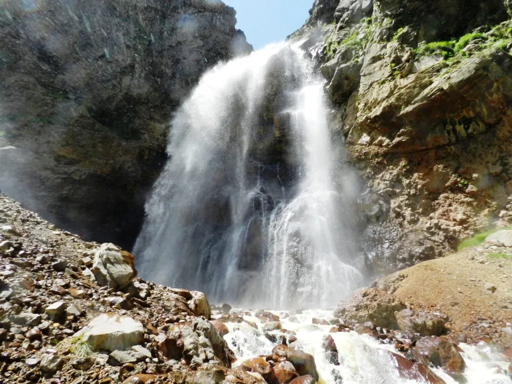
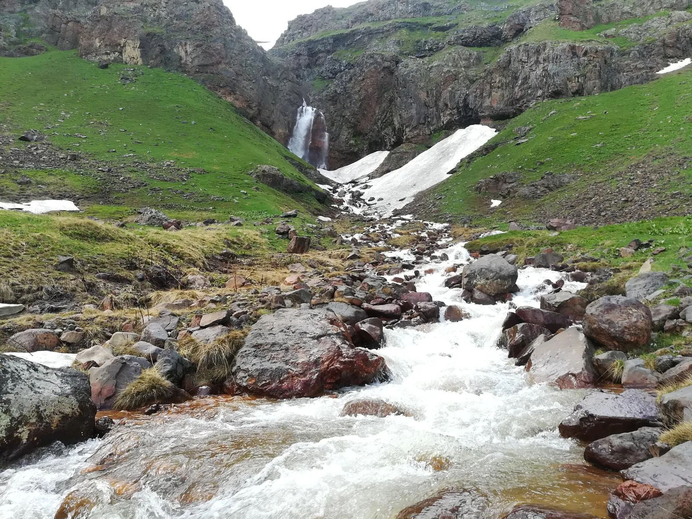
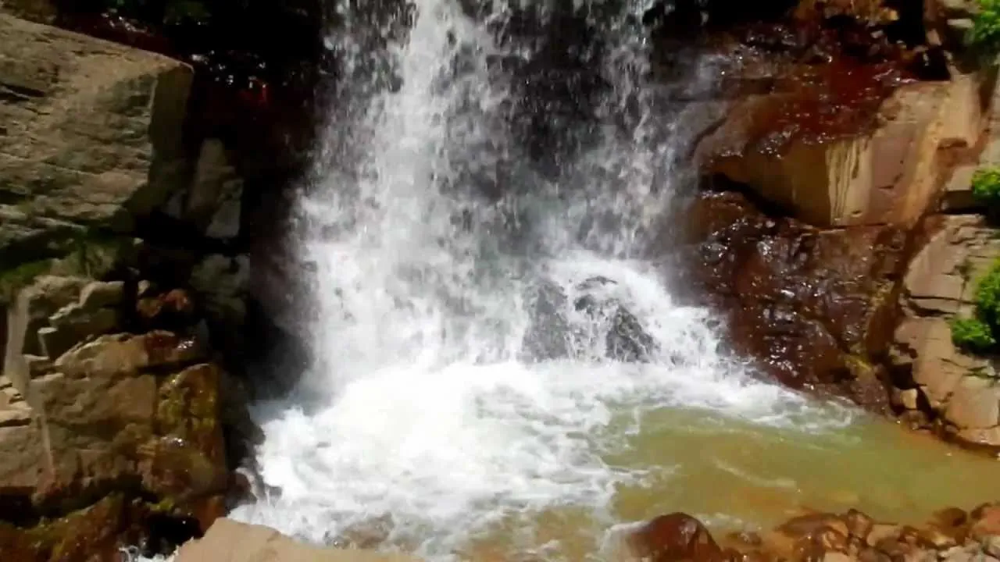

Գեղարոտը Քասախ գետի աջ վտակն է, որը նրան միանում է Արագածոտնի մարզի տարածքում: Այն սկիզբ է առնում Արագած լեռան արևելյան լանջից՝ 3600 մ բարձրությունից և մայր գետին է միախառնվում Ափնագյուղից 1կմ հարավ-արևելքում: Գետակն ունի 25 կմ երկարություն, 66 կմ² ջրհավաք ավազան: Գետահովիտը V-աձև է ու կիրճանման, ստորին հոսանքում լայնանում է:


Այս վտակի սնումը մեծ մասամբ հալոցքային է (69%), իսկ վարարում է մայիս-հունիս ամիսներին: Տարեկան միջին ծախսը կազմում է 0,94 մ³/վ։ Ջրերն օգտագործվում են նաև ոռոգման համար: Գետահովտում կան հանքային ջրերի ելքեր:Արագածի լանջին՝ ծովի մակերևույթից 3000 մետր բարձրության վրա գետն առաջացնում է համանուն և բավական հայտնի՝ Գեղարոտի ջրվեժը, որը գտնվում է ՀՀ Արագածոտնի մարզի Արագած գյուղից 12 կմ հեռավորության վրա:


Այս գողտրիկ ջրվեժն ընդգրկված է Հայաստանի հիդրոգրաֆիկ բնության հուշարձանների ցանկում՝ ըստ 2008 թ. օգոստոսի 14-ին ընդունված՝ «ՀՀ բնության հուշարձանների ցանկը հաստատելու մասին» Կառավարության որոշման:
Գեղարոտի անզուգական ջրաշխարհը հաճախ շփոթում են Թռչկանի հետ: Ձմռանը գետը սառցակալում է, իսկ ամռանը դարձյալ ակտիվանում է՝ ցած գահավիժելով 17մետր բարձրությունից և շռնդալից թափվելով՝ ամբողջ շրջակայքը լցնում է իր աղմկալի շառաչով:




